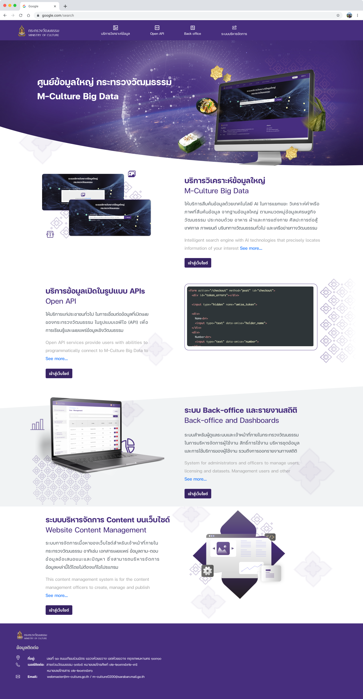
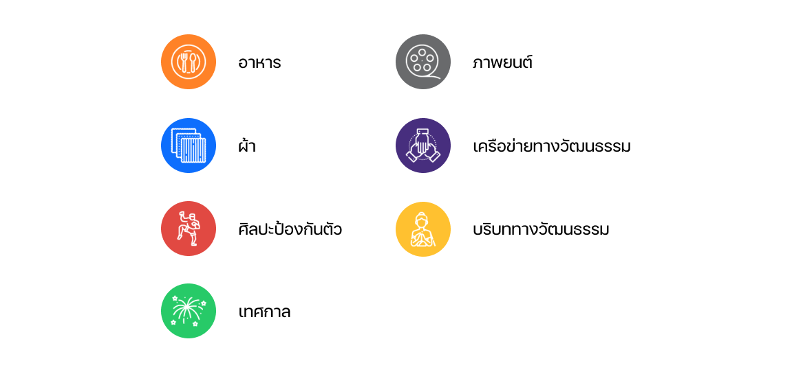
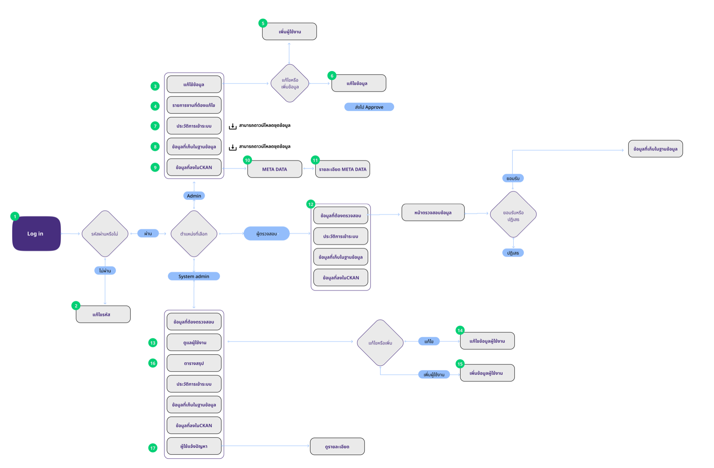
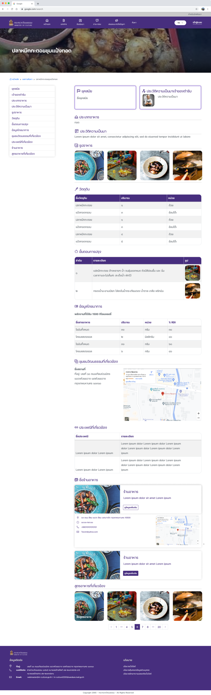
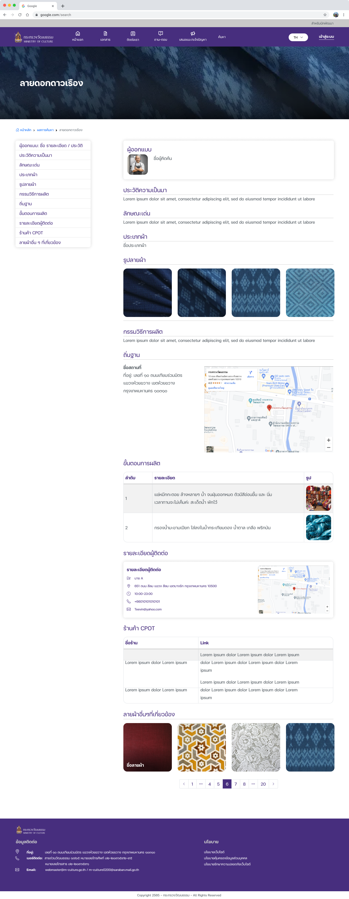
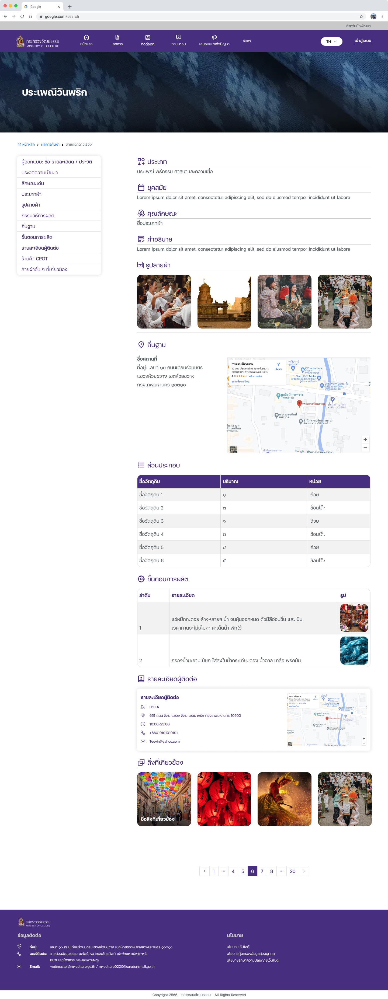

Big-data platform UI for the Ministry of Culture, where Thai motifs meet modern layout.

Scroll inside the screen
This project is more than an interface. It is a system that lets both ministry officials and citizens search information specific to the Ministry of Culture.
One platform serves two audiences. Officials manage and maintain the records. Citizens find cultural information that was hard to reach before.

The Ministry collects many different types of data, and records are entered in inconsistent ways. That makes search complex and unreliable.
The platform also has to meet a higher bar than most. It must display data in detail, and every record must be verifiable — traceable back to its source. Government credibility depends on it.
We brought order to the data before improving the search. Similar topics are grouped together, officials enter records through structured templates, and a data-standard system checks every record before it enters the platform.




Built for directors and executives, the dashboard shows a live overview of all data currently in the system. Leaders use it to plan ahead and to see each province's demand for data access.